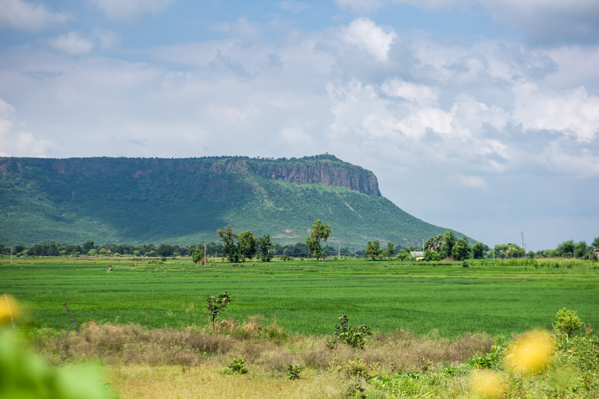

This is page containing information about some best places in Rohtas
For Exploring Rohtas kindly scroll
Tutla Bhawani waterfalls
Tutula Bhawani (also Tutrahi or Titula Dham) is located nearby Tilauthu and approximately 20 Km
south west from Dehri-on-Sone. From north-west and south-east, these are two large mountains.The two
large mountains one from north west and another from south east at converge to create a green valley
which stretches to 1 mile , there’s a spring fall in the middle and from the middle of the valley a
kachuar river flows.
All this creates a fascinating scene, from east this valley stretches 300 M wick wharves, from west
it shrinks to only 50M from west a spring fall is created which falls from a height of 200 M.
Manjhar Kund & Dhuan Kund Sasaram
Manjhar Kund and Dhuan Kund waterfalls situated on Kaimur hill, 10 km from the Sasaram. According to
the ancient history there was the tradition of carrying the Guru Granth Sahib. The people of the
Sikh community used to stay on the Manjhar Kund for three days. It is said that the water of the
Kund is full of natural minerals and very helpful in digesting food.
It is the most beautiful spot and scenic place in Sawan. There is a tradition of fair on the
first Sunday after the Raksha Bandhan festival.
Kaimur Hills
With deep jungles interspersed with gorges and beautiful waterfalls, containing randomly dispersed antiquarian remains, the Hills of Kaimur retain their unique air of mystery. Forming the easternmost part of the Vindhya Range, beginning near Katangi in Jabalpur (Madhya Pradesh) and ending near Sasaram in Rohtas (Bihar), the Hills have sheltered human activities since the most ancient times, and one still finds several imprints of the activities of our early ancestors, with prehistoric rock shelters dating to even earlier than 10,000 B.C. More than 500 pre-historic rock shelters have been found on the hills, and several of these have been found to contain paintings preserving the artistic impressions of our early ancestors. The Hills contain several early Hindu and Buddhist relics along with medieval ones

Sher Shah Suri Tomb
The Tomb of Sher Shah Suri is situated at Sasaram in Rohtas district of Bihar. Sher Shah Suri’s tomb is a majestic example of ancient architecture. It has elements of Indo-Islamic architecture which include large open courtyards, high domes, and pillars; it has hints of Afghan architecture as well. This beautiful structure is a three-storeyed high mausoleum (approximately one hundred and twenty-two feet). It stands in the middle of an artificial square-shaped lake